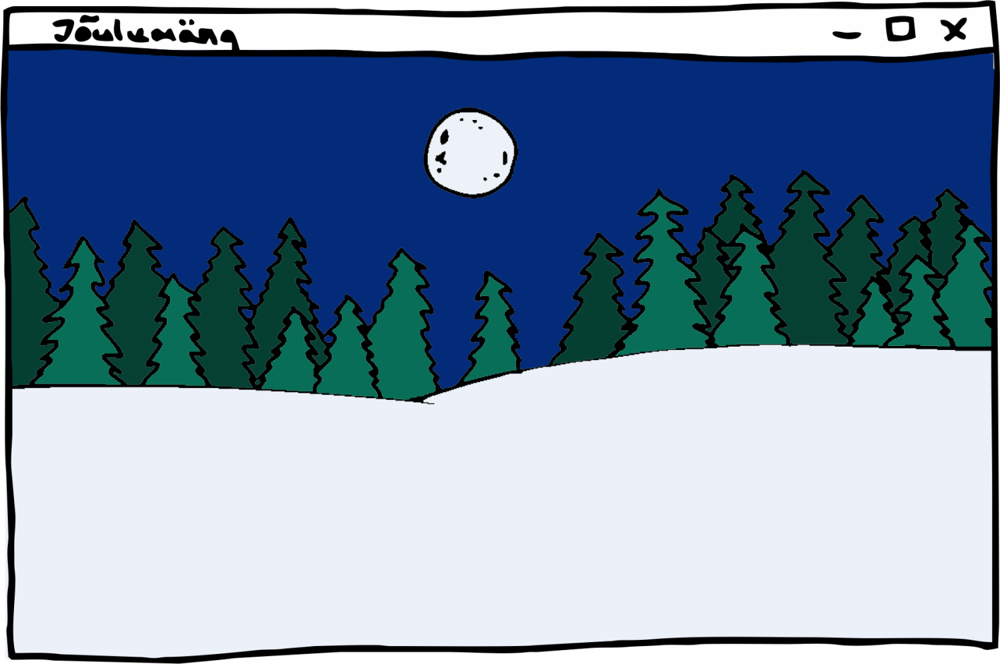
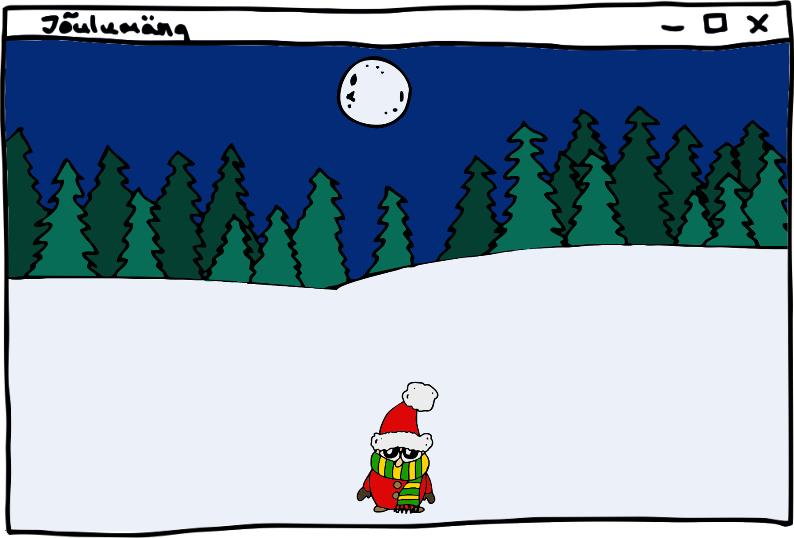
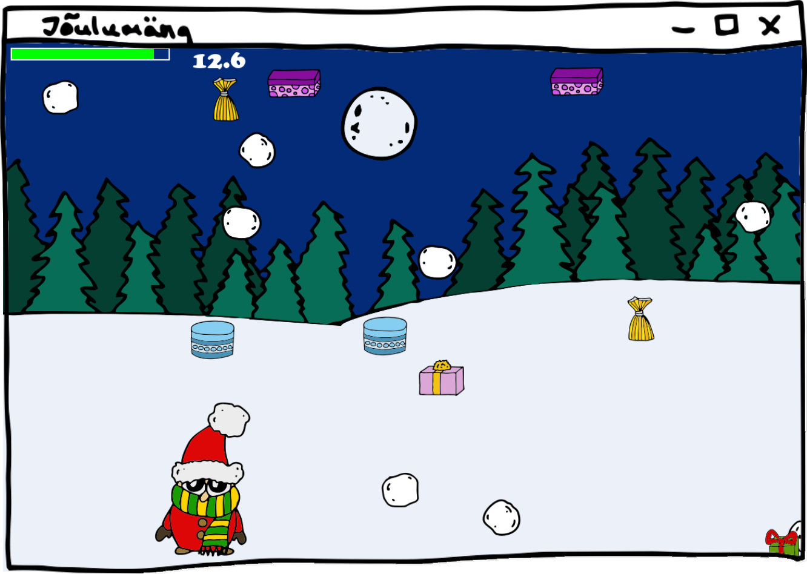
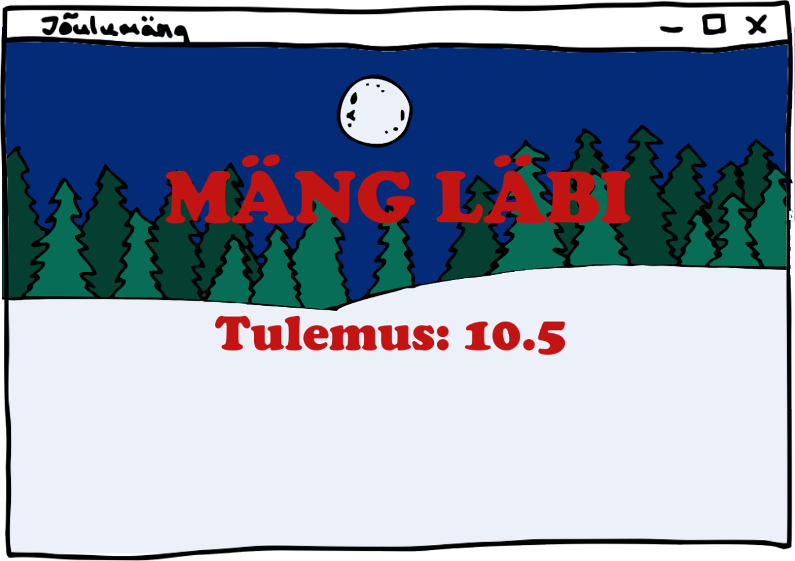
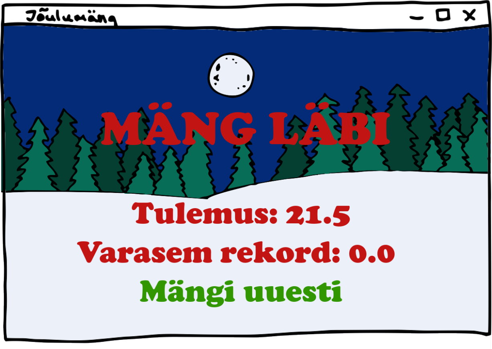

3. Kuidas lisada mängu tegelasi ja teisi elemente?
4. Kuidas reageerida kasutaja tegevustele?
5. Kuidas tuvastada erinevate objektide kokkupõrkeid?
6. Kuidas lisada mängule heli?
Selles peatükis võtame ette lihtsa mängu loomise. Siin saame rakendada kõike, mida oleme õppinud – tingimuslauseid,
tsükleid, funktsioone, andmestruktuure, klasse ja pärilust. Mäng, mida looma hakkame, on jõuluteemaline. Põhitegelane on päkapikk, kes
saab ekraanil vasakule-paremale liikuda, ja taevast sajab alla lumepalle ja kingitusi. Kingitused annavad päkapikule elusid juurde ja
lumepallid võtavad elusid ära. Eesmärk on võimalikult kaua elus püsida.
Mängu loomiseks kasutame ühte Pythoni teekidest nimega pygame.
Erinealt teegist random, mida varem oleme kasutanud, ei tule pygame
Pythoniga automaatselt kaasa. See on vaja eraldi installida. Õnneks on seda Thonnyga väga lihtne teha.
Thonnyl on üleval menüüribas Tools, millele vajutades avaneb tööriistada menüü.
Sealt esimene variant on Manage packages..., millele vajutades avaneb uus aken, kust saame erinevaid teeke
installida. Üles otsingukasti kirjutame pygame ja otsime sellise nimega teeki. Valikusse tekib ilmselt palju
erinevaid teeke, mis sisaldavad nime pygame, aga me tahame seda, mille nimi ongi lihtsalt
pygame ja ei midagi muud. Vajutades selle teegi nimele kuvatakse veel infot selle teegi kohta ja akna all on ka
nupp nimega Install. Sellele vajutades insallitaksegi vajalik teek ja pärast installimist võime selle
akna sulgeda ja pygame ongi kasutamiseks valmis.
Kuidas luua mänguakent?
Vaatame kõigepealt väga üldist pygame'i mängu programmi. See programm kuvab lihtsalt tühja akna,
kuid juba selleks on omajagu asju vaja ära teha.
Kõigepealt tuleb pygame'i teek importida. Seekord
kasutame natuke teist viisi importimiseks. Varem kasutasime sellist konstrukstiooni
See rida importib meile kõik funktsioonid ja meetodid sellest teegist ning saame neid kohe kasutada. Seekord aga
kasutame sellist importi:
See rida impordib teegi ja kui tahame sealt mõnda meetodit kasutada, siis peame kõigepealt tüpsustama
ka teegi nime. Teegi nime järele läheb punktiga meetodi nimi. Näiteks on teegis pygame meetod
nimega init(). Ülemise importimise variandi puhul saaksimegi kasutada otse seda meetodi, aga teise variandi
puhul peame ka teegi täpsustama: pygame.init().
Võib tekkida küsimus, et miks eelistada seda teist varianti, kui selle tulemusena peab rohkem vaeva nägema? Selle eeliseks
on nimelt see, et siis on igal pool koodis kohe näha, kust kasutatav meetod tuleb. On see meie enda kirjutatud või tuleb see kuskilt teegist.
Kasutades pygame'i on oluline koodi alguses pygame
seadistada meetodiga init() ning lõpus sulgeda meetodiga quit().
Mooduli display abil saame seadistada oma akna suuruse ja pealkirja.
Kogu mängu loogika asub mängutsüklis,
mis käib väga kiiresti kogu mängu jooksul ja loeb aina kasutaja klahvivajutusi ja hiireliigutusi. Need tegevused saame kätte
moodulist event meetodiga get() ja oma programmis saame
tsüklis kõik need tegevused läbi käia ja vaadata kas mõni neist huvitab meid ja kuidas tahame nendele reageerida. Hetkel huvitab meid ainult
ristist akna sulgemise tegevus, mille korral tahame mängutsükli lõpetada. Siin oleme kasutanud muutujat käib,
mis on tõene kui mäng veel käib ja muutub vääraks kui mäng saab läbi. Meie mängutsükkel kontrollib selle muutuja väärtust oma tsüklitingimuses.
Edaspidi hakkame ekraanile ka erinevaid asju joonistama ja tsüklis nende omadusi muutma. Selleks, et muudatused ka
kasutaja mänguaknasse jõuaksid, tuleb mänguakent uuendada. Seda tehakse mooduli display meetodiga
flip().
Muudame oma mänguakna natuke huvitavamaks ja lisame sinna vähemalt tausta. Kõik selle mängu loomiseks vajalikud pildid
saate alla laadida siit. Seal kasutas on pilt nimega
taust.png, mida tahame oma mängu taustana kasutada.
Pildi laadimiseks pygame'is saab kasutada mooduli
image meetodit load(), mis võtab argumendiks pildi
failitee. Eeldusel,
et pildid on Pythongi failiga samas kaustas, siis piisab lihtsalt faili nimest. Seda pilti saame nüüd endale
meelepärases kohas ekraanil
kuvada. Kõik asukohad ekraanil on määratud kahe koordinaadiga: x-koordinaat ja y-koordinaat. Võib-olla olete juba
matemaatikas neid õppinud.
X-koordinaat tähistab horisontaalset asukohta ehk kui vasakul või paremal element asub. Y-koordinaat tähistab
vertikaalset asulohta, ehk kui
üleval või all midagi asub. Alguspuntis on nii x- kui y-koordinaat 0 ja Pythoni jaoks asub see punkt vasakul üleval
servas. Mida suuremaks
muutub x-koordiaat, seda rohkem paremale nihkub element, ja mida suuremaks muutub y-koordinaat, seda allapoole
nihkub element.
Meie taustapilt on enam-vähem sama suur kui meie ekraan ja me tahame, et ta alguspunkt oleks (0, 0). Kõigepealt enne
mängu tsüklit peame pildi laadima ja muutujasse salvestama:
Ja selle kuvamiseks, peame mängu tsüklis selle ekraanile joonistama. Selleks kasutame oma mänguakna
objekti peal meetodit blit(), mis võtab argumendiks pildi, mis tuleb joonistada ja koordinaadid, kuhu
pilt lisada tuleb. See joonistamine tuleks teha enne flip() meetodit ehk enne akna uuendamist.
Hetkel on meie kogu kood koos taustapildiga selline:

Kuidas lisada tegelasi?
Tegelasi ja teisi mängu elemente kutsutakse sprite'ideks ja nad on kõik pygame'i klassi
Sprite alamklassid. Klassis Sprite on meetod nimega update(), mida kutsutakse välja iga kord kui on vaja
tegelast uuendada. Tüüpiliselt on see meetod vaja üle katta.
Ilmselt märkasid, et juba ainuüksi mängu käivitamiseks ja akna joonistamiseks pidime kirjutama palju koodi ja arvestades, et
me pole veel mängu loogikani jõudnud, läheks meie koodifail päris pikaks. Õnneks saame tegelikult oma koodi mitme Pythoni faili vahele ära jagada
ja importimise kaudu koodi teistest failidest kasutada. Loome uue faili nimega päkapikk.py samasse
kausta, kus oli meie põhimängu fail ja kirjutame siia uude faili oma esimese tegelase klassi: Päkapikk.
Klassi põhi hakkab kõigil tegelastel ja mängu elementidel sama olema, nad kõik peavad olema Sprite
klassi alamklassid ja
nende konstruktoris tuleb välja kutsuda ka Sprite klassi konstruktorit. Päkapiku jaoks on meil ka pilt olemas, failis
nimega päkapikk.png. Võime selle siin sisse laadida ja salvestada isendiväljale nimega
image. Sellise nimega isendiväli on olemas ülemklassis ja see tuleb väärtustada, kui soovime
kuvada mingit pilti oma tegelasena.
Teiseks on vaja väärtustada ülemklassi isendiväli rect.
See on lühend sõnast rectangle ja tähendab ristkülikut. Seda isendivälja kasutatakse mängus hiljem
tegelase paiknemise ala arvutamisel ja seda läheb vaja kui hakkame vaatama, kas meie tegelane põrkab mõne muu elemendiga kokku.
Selle isendivälja väärtustamiseks saame oma tegelase pildi põhjal ta rect väärtuse arvutada
meetodiga get_rect().
Samuti võiksime määrata ära oma tegelase algse asukoha. Näiteks väljale self.rect.centerx
saame salvestada tegelase x-koordinaadi ja väljale self.rect.bottom tegelase alumise ääre
y-koordinaadi. Need x- ja y-koordinaadid võiks meie konstruktor endale argumentideks võtta.
Nüüd liigume tagasi oma põhiprogrammi juurde ja vaatame, kuidas teises failis asuvat Päkapiku klassi kasutada ja
tegelane ka ekraanile kuvada. Kuna meie Päkapikk klass ei asu enam samas failis, siis tuleb kõigepealt too fail importida. Panime
faili nimeks päkapikk.py ja faili importides kirjutame faili nime ilma faililaiendita.
Nüüd saame failis päkapikk.py olevaid asju kasutada täpselt samamoodi nagu kasutame
pygame'i asju. Näiteks loome ühe uue päkapiku isendi (samas kohas kus laadisime sisse taustapilti).
Paneme oma päkapikku x-koordinaadiks akna keskpukti. Saame selle kätte kui jagame laiuse kahega (kasutame täisarvulist jagamist).
Y-koordinaadiks sobib midagi natuke alumisest äärest ülevalpool ehk siis näiteks 50 pikslit vähem kui kogu akna kõrgus.
Selleks, et oma tegelast mängus kasutada, peame ta lisama mõnda pygame'i
sprite'ide gruppi. Selleks loome kõigepealt tühja grupi ja siis kutsume välja grupi
meetodit add, millele anname argumendiks oma tegelase. Tegelikult saame lisada ka mitu
objekti ühte gruppi, aga peategelane jääb meil siia praegu üksi.
Viimase sammuna tuleb mängutsüklis see grupp ka joonistada. Selleks on klassil Group olemas meetod
draw(), mis joonistab gruppi lisatud tegelased ekraanile. See rida tuleks lisada
kindlasti pärast
taustapildi joonistamist, sest kui tegelane joonistada enne taustapilti, siis jääb ta taustapildi taha peitu ja me
ei näe teda.
Kogu põhiprogramm on selle sammu lõpuks selline. Enne programmi käivitamist tuleks kindlasti salvestada
päkapikk.py fail, et kõik sealsed muudatused salvestuksid.

Kuidas panna tegelased liikuma?
Paneme nüüd oma päkapiku ka liikuma. Ta peaks saama liikuda ekraani ulatuses nii paremale kui ka vasakule. Selleks
uuendame natuke oma Päkapikk klassi ja katame üle ülemklassi meetodi update(). Seda
meetodit kutsutakse välja igal mängutsükli iteratsioonil tegelase andmete uuendamiseks. Sealhulgas ka näiteks ta asukoha muutmiseks.
Paneme oma tegelase liikuma nooleklahvide vajutuste peale. Iga parema nooleklahvi vajutusega peaks tegelane liikuma
natuke paremale ja iga vasaku nooleklahvi vajutusega natuke vasakule. Selleks peame suurendama või vähendama tegelase x-koordinaati.
Kuidas teada, mis klahvi kasutaja vajutas? Selleks saame kasutada pygame'i
mooduli key meetodit get_pressed(). See meetod tagastab jada klaviatuuri
klahvide staatustest. Iga element selles jadas sümboliseerib mingit klahvi ja on True, kui
klahv on alla vajutatud, ja False, kui ei ole.
Kuidas saada kätte meile huvipakkuv klahv?
Pygame'is on tegelikult kõikide klahvide jaoks konstandid olemas, mida saame kasutada. Nimekiri on
leitav aadressilt https://www.pygame.org/docs/ref/key.html ja sealt näeme, et
vasakule nooleklahvile vastab konstant K_LEFT ja parempoolsele
K_RIGHT. Näiteks vasakule nooleklahvile vastava tõeväärtuse saame siis kätte nii:
Proovime nüüd kokku panna vastavad tingimuslaused. Kui vasak nooleklahv on alla vajutatud, siis
tahame tegelase x-koordinaati natuke vähendada, parema nooleklahvi puhul natuke suurendada.
Kui oma Päkapikk klassi selle meetodiga uuendad, siis peaksid märkama, et tegelane tõesti liigub
nooleklahvide vajutamise peale. Kui tahad, võid proovida ka liikumiskiirust muuta. Mis saab kui hoiad ühte nooleklahvidest all?
Ilmselt märkad, et tegelane läheb akna piiridest välja ja kaob ära. Peaksime seadma talle piirid ja mitte lubama piiridest välja minna.
Hetkel ei tea meie tegelane aga midagi selle kohta, mis on akna laius, kus tal on lubatud liikuda. Vasakul ei tohiks lubada
x-koordinaadil negatiivseks minna, aga mis on piir paremal? Peaksime ilmselt isendit luues talle akna laiuse ette andma ja
isendiväljale salvestama.
Muudame selleks kõigepealt oma konstruktorit:
Nüüd saame seda isendiväljale salvestatud akna laiust ka meetodis update()
kasutada. Tegelikult on meie tegelase isendiväljal rect veel teisi variante peale
centerx, et x-koordinaati mõjutada. Näiteks left ja
right, mis kontrollivad vastavalt tegelase vasaku ja parema ääre x-koordinaati. Need
sobivad meile
praegusel juhul isegi paremini, kui lihtsalt tegelase keskpunkt.
Kui nüüd Päkapikk klassi salvestad ja mängukoodi käivitad, siis näed, et tegelane ei lähe enam
aknast välja ja ei kao ära.
Lisame taevast sajavad lumepallid
Peategelane on meil nüüd olemas. Järgmiseks lisame lumepallid, mida meie tegelane peaks hakkama vältima. Selleks loome
kõigepealt klassi Lumepall, mis on samuti klassi Sprite alamklass. Ka selle klassi jaoks võime luua eraldi faili, näiteks nimega
lumepall.py.
Lumepalli klassi lisame natuke juhuslikkust. Esiteks on meil viis erinevat lumepalli pilti,
valime isendi jaoks neist ühe juhuslikult. Samuti võiksime lumepallile alguskoha juhuslikult genereerida, seega anname
oma Lumepall konstruktorile argumentideks akna laiuse ja kõrguse, mille põhjal saame juhusliku asukoha genereerida.
Juhuslikkuse kasutamiseks on meil vaja importida ka teek random.
Peame nüüd mängus mõne Lumepalli isendi looma. Loome näiteks kohe kaheksa tükki ja lisame nad kõik ühte
sprite'ide gruppi. Seejärel mängu tsüklis kutsume välja selle grupi meetodit update()
ja joonistame grupi ekraanile (update() meetod pole meil veel küll üle kaetud, aga kohe lisame ka selle).
Kui nüüd koodi käivitad, siis näed, et kaheksa lumepalli on iga kord erinevates kohtades ekraanil. Kuid hetkel nad ei
liigu ega tee midagi huvitavat. Järgmiseks lisamegi neile liikumise.
Tegelikult me ei taha, et lumepallid päris keset ekraani oleks mängu alguses. Me tahaks, et nad hakkaksid ekraani ülevalt järjest alla
sadama. Selleks muudame natuke nende konstruktorit ja genereerime neile y-koordinaadi hoopis väiksest negatiivsest vahemikust, näiteks -150 kuni -50.
See tagab selle, et ühtegi lumepalli pole mängu alustamise hetkel näha, aga siis nad hakkavad vaikselt allapoole liikuma.
Liikumise saame tekitada jälle meetodis update(). Alustame lihtsalt sellest,
et suurendame seal lumepalli y-koordinaati mingi kindla arvu võrra.
Nüüd lumepallid liiguvad tõesti ülevalt alla, kuid see liikumine on veel üsna igav. Nad liiguvad sama kiirusega lihtsalt otse ülevalt alla ja siis kaovad akna piiri taha.
Siin on päris mitu muudatust, mis teeks selle koodi paremaks.
Esiteks tahaksime, et liikumine oleks rohkem suvaline. Selleks saame ka
liikumiskiiruse genereerida juhuslikult. Lisaks y-koordinaadi muutmisele võime natuke muuta ka x-koordinaati, siis ei liigu lumepall ainult otse alla,
vaid ka natuke paremale või vasakule. Selleks võime näiteks isendit luues tekitada kaks uut isendivälja nii y-suunas kiiruse jaoks kui ka
x-suunas kiiruse jaoks. X-kiirus võib olla ka negatiivne, siis liigub lumepall oma alguspunktist vasakule.
Teiseks pole meil mõtet lasta lumepallil peale akna piiridest väljumist enam edasi minna.
Pigem viime ta siis hoopis üles tagasi ja laseme tal uuesti alla langeda. See tekitab pideva lumesaju effekti. Võime
samamoodi, nagu konstruktoris, uue juhusliku asukoha ja juhuslikud kiirused määrata. Kuna see kood on sama, mis konstruktoris,
siis oleks loogiline see eraldi meetodisse tõsta, mida saame mõlemas kohas välja kutsuda.
Nüüd liiguvad meie lumepallid juba päris kenasti. Järgmiseks võiks lisada kasutajale eluderiba ja
hakata seda
vähendama iga kord kui ta lumepalliga kokku puutub.
Kuidas kokkupõrkeid tuvastada?
Alustame kõigepealt sellest, et lisame oma peategelasele elud ja kuvame eluderiba ka ekraanil. Seejärel lisame
lumepalliga kokkupuutudes elude vähendamise.
Täiendame oma Päkapikk klassi konstruktorit nii, et anname argumendiks ka täiselude väärtuse. Salvestame selle isendiväljale ja
lisame ka teise isendivälja elude jaoks. Alguses on elude arv võrdne täiseludega.
Ka peaklassis peame Päkapiku isendi loomisel nüüd uue argumendi andma. Anname algues tegelasele näiteks 10 elu.
Nüüd lisame mängu klassi eluderiba joonistamise. Kuna eluderiba puhul pole otseselt tegu tegelasega, siis ei ole meil siin
mõtet hakata selle jaoks uut klassi looma. Pygame'il on endal olemas võimalused erinevate kujundite joonistamiseks ja siin kasutamegi
lihtsalt ristkülikute joonistamist. Lisame valget värvi piirjoone ja selle sisse rohelise eluderiba. Eluderiba pikkus oleneb sellest, kui palju kasutajal on
elusid alles. Kui elud on täis, siis on eluderiba ka maksimaalse laiusega. Vastasel juhul peame arvutama, mitu protsenti elusid kasutajal alles on, ja selle
põhjal saame kätte eluderiba laiuse.
Kogu eluderiba joonistamise võiksime panna eraldi funktsiooni ja siis mängutsüklis seda funktsiooni välja kutsuda. Funktsiooni argumendid
võiks olla akna objekt (seda läheb joonistamisel vaja) ja kui palju on eluderiba täidetud ehk mitu protsenti kasutaja eludest on alles. Funktsiooni
alguses määrame ära, kui lai peaks olema meie eluderiba piirjoon ja kuhu me teda paigutada tahame. Salvestame need andmed muutujatesse.
Nüüd tekitame kaks pygame.Rect isendit. Esimene neist on piirjoone jaoks ja teine täidise jaoks.
Argumentideks anname x-koordinaadi, y-koordinaadi, laiuse ja pikkuse. Neil kahel ristkülikul on ainult laius erinev. Piirjoone ristkülikul on see maksimaalne
eluderiba laius ja täidise puhul peame selle arvutama (korrutame maksimaalse eluderiba laiuse argumendiks saadud protsendiga).
Seejärel joonistame
kummagi ristküliku ekraanile. Selleks kasutame meetodit pygame.draw.rect(), mille esimeseks argumendiks anname akna objekti,
teiseks värvi, kolmandaks pygame.Rect objekti. Piirjoone joonistamisel anname ka neljanda argumendi – piirjoone laiuse.
Värvid on siin RGB-koodid ehk kolmeelemendilised ennikud, kus esimene element on punase, teine rohelise ja kolmas sinise värvi intensiivsus (täisarv vahemikus 0 - 255).
Musta värvi jaoks on kõik kolm elementi nullid, valge jaoks on kõik kolm 255 ja näiteks rohelise jaoks on esimene ja kolmas nullid, aga teine element 255. Võite proovida neid koode muuta ja vaadata kuidas
värvid muutuvad.
Mängutsüklis lisame selle funktsiooni väljakutse enne enne pygame.display.flip() rida.
Nüüd oleme valmis liikuma kokkupõrgete juurde. Selleks on olemas meetod pygame.sprite.spritecollide(), mille
abil saame kätte ühe sprite'i kokkupõrked mingis etteantud grupis asuvate sprite'idega.
Argumentideks tuleb esiteks anda tegelane, teiseks grupp, kellega kokkupõrkeid jälgime, ja kolmandaks tõeväärtus, mis ütleb, kas
kustutada kokkupõrkavad grupi isendid. Meetod tagastab järjendi nendest grupi isenditest, kes põrkasid tegelasega kokku. Meie puhul
anname argumendiks peategelase, siis lumepallide grupi ja viimasena tõeväärtuse False. Lumepalli eemaldamise asemel on meil
mõistlikum talle jälle lihtsalt uus asukoht määrata.
Lisaks tahame peategelase elusid vähendada. Selleks võime lisada Päkapikk klassi meetodi vähenda_elusid()
ja kutsuda seda iga kokkupõrke korral välja.
Mängutsüklis järgime kokkupõrkeid pärast seda kui oleme oma tegelast ja lumepalle uuendanud, kuid enne seda kui nad
ekraanile joonistame. Kui peategelase elud jõuavad nulli, siis peaksime ka mängu lõpetama.
Nüüd on ilusti näha, kuidas lumepalliga kokku põrgates elude arv väheneb. Tasub veel ära mainida, et kokkupõrgetes vaadatakse, kas
tegelaste kastid kattuvad. Tegelase kast on ristkülik, mis ümbritseb tegelase pilti. Kuna selle ristküliku piirjooned on kohati laiemad kui tegelase enda piirjoon, siis
võivad kokkupõrked olla ebatäpsed ja kokkupõrge toimub juba siis kui lumepall tegelasest väga lähedalt möödub. Iga isendi kokkupõrkavat ala saab ka muuta ja kasutada midagi
pildile sarnasemat, mitte tegelase kasti, kuid siin me jätame selle sammu praegu vahele.
Kingituste lisamine
Lisaks lumepallidele on meil mängus ka kingitused. Need toimivad väga sarnaselt lumepallidele, need peaks hakkama ülevalt taevast sadama, kuid
kokkupõrkel mängijaga hoopis suurendavad ta elusid. Kingituste jaoks tuleks luua klass Kingitus. Kuna see klass on Lumepalliga väga sarnane, siis tasuks ehk isegi
mõelda neile ühise ülemklassi loomise peale, mis hoiaks endas neid meetode ja isendivälju, mida need kaks klassi jagavad.
Proovi omal käel kingitused ka mängu lisada. Kui jääd hätta, siis vaata vihjeid.
Lisame aja loendamise ja keerukuse kasvamise
Selle mängu eesmärk on võimalikult kaua elus püsida. Hetkel see pole just eriti keeruline, kuid hakkame nüüd mängus ka loendama, kaua mäng juba
käinud on ja lisame iga natukese aja pärast lumepalle ja kingitusi juurde (lumepalle siiski rohkem kui kingitusi). Siis muutub meie mäng ajas natuke keerulisemaks ka.
Kõigepealt aga aja lugemine. Kuna tahame aega ka ekraanil kuvada, siis on meil vaja luua uus
muutuja, mis hoiaks andmeid fondi
(teksi kujunduse ja stiili) kohta, mida tahame teksti ekraanil kuvamiseks kasutada. Selle fondi objekti kaudu saame
hiljem teksti ekraanile ka joonistada.
Me valime siin fondi nimega Cooper Black ja tekstisuurusega 40. Selle muutuja loome
kuskil programmi alguses, enne mängutsüklit.
Enne mängutsüklit peame salvestama ka hetkeaja kuhugi muutujasse. Hiljem saame selle kaudu arvutada, kaua mäng käinud on.
See meetod tagastab hetkeaja millisekundites.
Mängutsüklis tahame iga kord arvutada, kaua mäng käinud on. Selleks võtame jälle hetkeaja ja lahutame sellest mängu algusaja.
Muudame selle ka millisekunditst sekunditeks, selleks jagame tuhandega, ning ümardame ühe komakohani.
Nüüd jääb üle ainult see aeg ekraanile lisada. Selleks kasutame kõigepealt oma fondi meetodit render(),
mis joonistab meile tekstist pildi. Argumentideks anname teksti, mida tahame kasutada (meie puhul aeg sõnena), tõeväärtuse, mis ütleb kas tahame
kõrgema kvaliteediga pilti (True) või väiksemat madalama kvaliteediga pilti (False), ja
kolmandaks teksti värvi. Seejärel saame selle oma akna meetodi blit() abil aknasse soovitud asukohta lisada.
Selle rea võiks lisada tsüklis pärast eluderiba joonistamist.
Kui nüüd oma mängu käima paneme, siis näeme eluderiba kõrval aega jooksmas.

Nüüd lisame mängule keerukust. Me teame igal tsükli iteratsioonil, mitu sekundit on mängu algusest möödunud. Proovime lisada
iga 5 sekundi järel uue lumepalli oma lumepallide gruppi ja iga 10 sekundi järel uue kingituse. Kui soovime kontrollida 5 sekundi möödumist, siis võime
leida jäägi kui jagame aega viiega. Siin on aga üks lõks, nimelt käib mängutsükkel väga kiiresti ja tingimus aeg % 5 == 0
on tõene ilmselt mitme iteratsiooni puhul. Siiski tahame vaid ühe korra lumepalli või kingitust lisada. Selleks saame lisada tingimuse, mis vaataks mitu
lumepalli või kingitust juba vastavas grupis on ja palju neid selleks hetkeks peaks olema. Teame, et algselt oli meil lendavaid objekte kaheksa ja iga 5-
või 10-sekundilise perioodi tagant peaks üks lisanudma. Seega sobiks meile järgmised tingimuslaused:
Selle osa lõpuks näeme kaua oleme suutnud mängus elus püsida ja mäng muutub ka järjest raskemaks. Kuid mängu lõpus programm
lihtsalt sulgub. Oleks tore, kui näeksime mingit lõpuakent, mis annaks meile teada meie tulemuse ja võib-olla isegi mängu senise rekordaja.
Võiks olla ka võimalus mängu kohe uuesti mängida.
Lõpuaken
Lõpuakna joonistamine sarnaneb tavalise mänguakna joonistamisele, aga see peaks oma olemuselt juba palju lihtsam olema.
Alustame aga hoopis oma koodi korrastamiseks. Tõstame senise mänguloogika eraldi funktsiooni.
Akna laiuse, kõrguse, akna objekti ja taustapildi võime luua põhiprogrammis ja anda funktsioonile argumentidena ette. Hilejm loome
ka lõpuakna joonistamiseks eraldi funktsiooni ja seal on neid samu andmeid ja objekte vaja.
Natuke muudame ka oma tsükli struktuuri. Kuna nüüd on meil mängutsükkel funktsiooni sees, siis lihtsalt
tsükli lõpetamise asemel tahame funktsioonist ka midagi tagastada. Kui kasutaja mängis mängu lõpuni ja kaotas, siis tahame tagastada kasutaja aja. Kui
ta pani keset mängu akna ristist kinni, siis võime tagastada näiteks None. Esimesel juhul
tahame pärast kaotust näidata ka lõpuakent, teisel juhul mitte.
Tekitame nüüd veel uue funktsiooni lõpuaken(), mis võtab
argumentideks akna objekti, taustapildi ja mängija saadud tulemuse. See funktsioon võiks tagastada tõeväärtuse:
False, kui kasutaja paneb akna ristist kinni, ja True,
kui kasutaja soovib uut mängu mängida.
Alustame sellest, et kuvame kasutajale lihtsa akna, kus on kõigepealt suurelt tekst "MÄNG LÄBI" ja siis väiksemalt
all kasutaja saadud tulemus. Teksti kuvamiseks on meil jälle vaja fonte. Loome siin kaks fonti, ühe suure teksti jaoks ja teise väikse jaoks.
Kasutame nende tekstide puhul tumepunast värvi, RGB-ennikuna sobib näiteks (195, 20, 20). Kutsume välja ka fondi meetodit render(),
et muuta tekst pildiks, mida saame tsüklis aknale joonistada.

Järgmine suurem samm on lisada uuesti mängimise võimalus. Selleks lisame näiteks teksti "Mängi uuesti" ja kui kasutaja seda klikib, siis
võiks meie funktsioon tagastada True ja põhiprogrammis saame seda tagastusväärtust kontrollida ja panna uue mängu käima.
Loome kõigepealt sarnaselt eelmistele tekstidele uue teksti "Mängi uuesti". Seekord võiksime kasutada rohelist värvi (50, 150, 0).
Hiireklikid saame pygame'i sündmuste seast kätte. Me juba kontrollisime, kas äkki toimus
ristist akna kinni vajutamise sündmus. Nüüd kui tahame kontrollida, kas hiireklahv vajutati alla, siis selleks sobib
event.type == pygame.MOUSEBUTTONDOWN. Kui tahame ka veenduda, et tegemist oli kindlasti vasakpoolse hiireklahviga, siis kontrollime
lisaks kas event.button == 1. Vähe sellest, et me nüüd teame, et hiire vasak klahv vajutati alla. Meil on vaja ka kontrollida, kas
hiir asus sel hetkel "Mängi uuesti" teksti kohal. Hiire asukoha saame kätte meetodiga pygame.mouse.get_pos() ja
selleks, et kontrollida, kas see oli "Mängi uuesti" teksti kohtal, on meil vaja sellest tekstist rect'i. Täpselt nii nagu ka
tegelaste kokkupõrgetel. Mängi uuesti rect'i saame kätte get_rect() meetodiga ja me peame sellele
ise käsitsi ka x- ja y-koordinaadid määrama.
Hiirekliki kontrolli saame lisada nii:
Lõpuks tuleb ka see tekst ekraanile kuvada:
Põhiprogrammis võime kõigepealt kutsuda välja oma funktsiooni mäng(). Selle funktsiooni
tagastusväärtuse salvestame muutujasse ja seejärel loome tsükli. Kuniks tulemus ei ole None, siis
kutsume välja funktsiooni lõpuaken() ja salvestame selle tagastusväärtuse ka muutujasse. Kui see tagastusväärtus oli
True, siis järelikult tahtis kasutaja uut mängu mängida ja võime uuesti funktsiooni mäng()
välja kutsuda. Kui tagastatud väärtus oli False, siis kasutaja tahtis mängu lõpetada. Sellisel juhul me tahame, et ka meie tsükkel lõpetaks.
Teeme veel paar viimast täiendust oma lõpuaknale. Esiteks võiksime muuta "Mängi uuesti" teksti tumeroheliseks, kui kasutaja hiirega sellele liigub.
See annab paremini mõista, et sellele tekstile võib vajutada. Selleks peame teise värviga looma ka teise "Mängi uuesti" tekstiga pildi, mis oleks tumedama värviga. Me
juba nägime, kuidas kontrollida, kas hiire asukoht ühtib mingi rect'i asukohaga, seega nüüd jääb üle vaid lisada tingimuslause, mis kontrollib,
kas tahame ekraanile joonistada heledama või tumedama värviga "Mängi uuesti" teksti.
Lisaks oleks äge, kui meie mäng hoiaks meeles, mis on selles mängus saavutatud rekord. Seda varasemat rekordit võiks kasutajale lõpuaknas ka kuvada.
Kui kasutaja saab parema tulemuse, siis muutub see uueks rekordiks. Kuna me tahame, et rekord püsiks alles ka siis kui programmi vahepeal kinni paneme, siis võiks selle
kirjutada kuhugi faili. Sobib tavaline tekstifail, milles ongi ainult üks rida – rekord.
Tuleb ka arvestada võimalusega, et mängu mängitakse esimest korda ja sellise nimega faili veel ei ole. Sellisel juhul ei tohiks meie programm
katki minna. Võime sellisel juhul kuvada kasutajale eelmiseks rekordiks 0.0. Tuleta meelde veahaldust ja failist lugemist/kirjutamist ja proovi lisada ka rekordi
arvestamine. Kui jääd hätta, siis vaata vihjeid.

Sellega on meie lõpuaken valmis. Kes soovib, siis võib sarnaselt luua mängule ka algusakna, mida kuvatakse kui kasutaja mängu käima paneb.
Heliefektide ja muusika lisamine
Ilmselt nõustud, et täiesti tumm mäng on natuke igav. Minimaalne, mis me lisada saame, on heliefekt lumepalli või kingitusega kokkupõrkeks. Õnneks on
pygame'is heli väga lihtne lisada. Mängu jaoks allalaetud piltide kaustas oli ka fail vuhin.mp3.
Loome sellest failist endale heliobjekti. Seda võime teha näiteks kohe funktsiooni mäng() alguses:
Loodud Sound-tüüpi objektil on olemas meetod play(), mille abil saab ühekordselt heli mängida. Võime seda meetodit välja kutsuda
kui peategelane põrkab kokku lumepalli või kingitusega:
Ja nii lihtne see ongi. Kui kellelgi on veel mõni oma helifail, mida tahaks kasutada mängu taustamuusikana. Selleks tuleks feli laadida mängu
taustamuusikana ja kutsuda välja meetodit pygame.mixer.music.play(). Sellele meetodile saab anda argumendiks korduste arvu, mitu korda muusikapala
korrata. Kui anda argumendiks -1, siis mängitakse muusikapala lõputult.
Sellega siinkohal oma mängu lõpetamegi. Sellele mängule on võimalik veel igasuguseid edasiarendusi teha ja miks mitte proovida ka täiesti uut mängu nüüd juba ise teha.
Mängu lõplik kood koos kõigi failidega on ka kättesaadav siit.